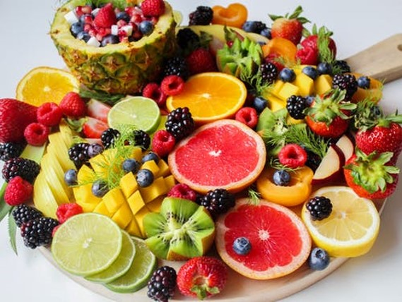

Our mission is to establish a fun and inclusive environment for our new and returning guests. We are devoted to giving our customers a positive experience, whether you wish to drink a smoothie with the family or sing along at our karaoke nights in the Tiki Bar.
Sam's Smoothie Shack was opened by Samantha Smith and her family in August of 2008. Dedicated mother and wife, Samantha Smith was devoted to opening a family business after working towards her bachelors in business at the University of Virginia. Moving from their city home in Leesburg, Virginia, the family set out to live in South Carolina for Sam to pursure her dream. With a vision of establishing a welcoming environment along the oceanside with smoothies and music, the Smiths opened up their new restaurant. Sam Smith works as the general manager, while her husband, Javier Smith, works as the assistant manager. Their two kids, Chloe and Noel, help on the weekends when not working on their studies. Beyond the Smiths, they have formed a smoothie-loving family of employees dedicated to creating a happy environment for their vacationing visitors.
At Sam's Smoothie Shack, we ensure that our fruits and vegatables are fresh for our guests. That said, we do not use any frozen fruit. Guests can choose their choice base (coconut milk, almond milk, 2% milk, water). Within our menu, we have our recommended choice.
